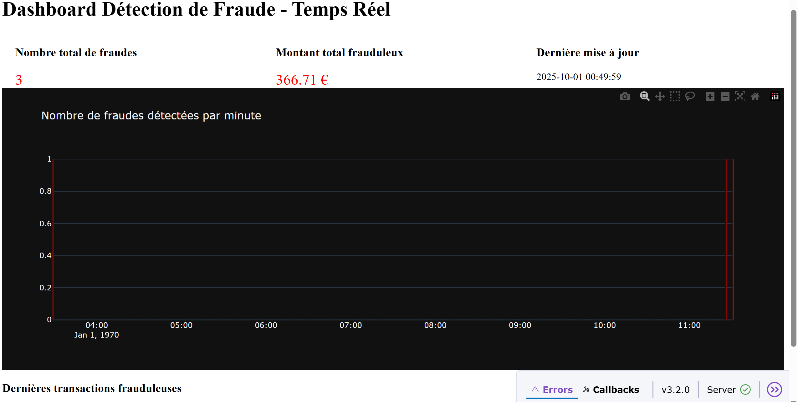
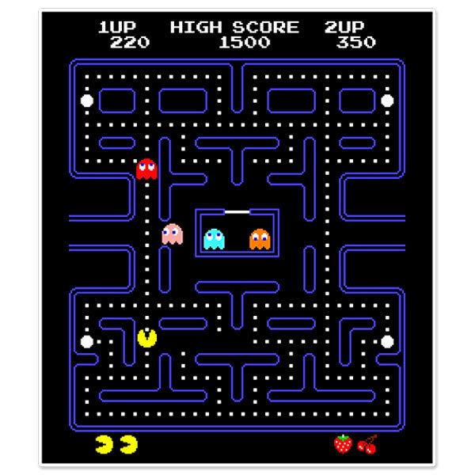
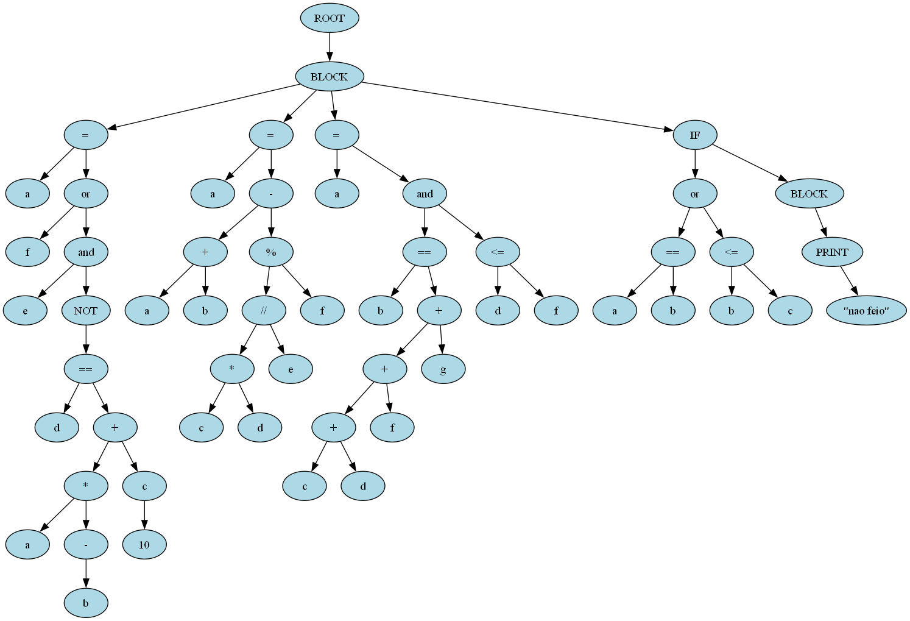

Projets
Détection de fraude
Machine Learning & Big DataContexte : Projet académique pour détecter les transactions frauduleuses à partir d’un dataset volumineux.
Méthodes : Utilisation de Kafka pour le streaming de données, Spark pour le traitement distribué, et modèles ML avec Python.
Résultats : Système capable de détecter les anomalies en temps réel avec un taux de précision supérieur à 90%.
Agent IA Pacman
Intelligence ArtificielleContexte : Développement d’un agent intelligent capable de jouer à Pacman.
Méthodes : Algorithmes A* et Minimax pour la planification et la prise de décision.
Résultats : Agent performant capable de compléter les niveaux avec un score élevé et un comportement stratégique.
Dashboards interactifs
Visualisation et gestion de donnéesContexte : Projet pour créer des dashboards permettant de visualiser des données massives.
Méthodes : Utilisation de Pandas et Matplotlib pour la préparation et la visualisation des données.
Résultats : Dashboards interactifs permettant une analyse rapide et claire des indicateurs clés.

Exploration de données biomédicales
BioinformatiqueContexte : Analyse de bases de données Uniprot et DrugBank pour identifier des interactions médicamenteuses.
Méthodes : Scripts Python pour extraction et traitement des données, visualisation et analyse statistique.
Résultats : Rapport d’analyse mettant en évidence les interactions clés entre protéines et médicaments.

Compilateur Mini-Python en Java
Développement logicielContexte : Projet académique visant à créer un compilateur simplifié pour un sous-ensemble de Python.
Méthodes : Analyse lexicale et syntaxique, génération de bytecode en Java.
Résultats : Compilateur fonctionnel capable d’exécuter des programmes simples avec gestion des erreurs de syntaxe.
Application Java – Révision TOEIC
Développement logiciel & EducationContexte : Création d’une application pour aider à la préparation du TOEIC.
Méthodes : Application Java avec interface graphique, quiz interactifs, suivi des scores et rappels personnalisés.
Résultats : Application fonctionnelle permettant aux utilisateurs de réviser le vocabulaire et les exercices de compréhension de manière interactive.